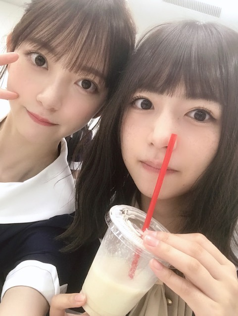

2019/0827Tue甘さが欲しい
やほ~
今日は、
水色のワンピースに水色のバッグで撮影にむかいました

小さいバッグにはお財布、持ち運び用香水、イヤフォン、ヘアブラシ、リップが入ってます☺︎
いただいたフルーツを持って
今日は早くお家に帰ってこれました幸せです
家族で夜ごはんを食べて
今は魔女の宅急便を観ています
何百回観たかわからないけどやっぱりいつ観てもほっこり。落ち着きます
色味も音楽も話の内容もトータルで好き
1番好きなジブリ作品...❤︎

フルーツだいすき人間


ふざけてる時が1番楽しい☺︎
今日は23:58からTBS その他の人に会ってみた
に梅ちゃんと出演します❤︎
是非、見てください
感想お待ちしてます~

では！
2019/08/27 19:24


コメント(281)
さな小さいバックあるけど財布くらいしか入んないʬʬʬきいちゃんとのツーショット可愛い フルーツすんごい美味しそうでいいなー
みおなが出るテレビ絶対見ます！！
お疲れ様なのです└(ﾟ∀ﾟ└) (┘ﾟ∀ﾟ)┘
巨峰？にラズベリー？に後なんだ？
フルーツは美味しいけど、食べ過ぎたらあかんよ～！
程々にね！
番組、見たらまたコメントします！
体調に気を付けて(*>д<)
んじゃね～！Σ⊂(ﾟДﾟ )
ようやくザンビBD買ったから見れるけど、
今日は目が不調だから、寝ます！
自分も好きです♪☆
香水で思い出したんやけど、自分の香水切れてたわ(笑)
新しいの買わなきゃ！
その他の人に会ってみた録画して観るね
未央奈は本当にジブリが好きだね
俺も魔女の宅急便好きだよ
体調はいかがですか？毎日みんなと仲良しで見ていてほっこりしています！
夜、絶対見るねー
これからも無理せず頑張ってください
応援してます！
ではでは
頑張ってるね
でも無理しないでよ？
ちょっとくすんだいい色の水色ですね。
金の見せ方が、バランスいいですね。
フルーツ一つとっても、花をディスプレ
イしたりして、お洒落だね。
僕もスルーツ大好き。これからのトレン
ドは、種なし柿かな。
ふざけられるくらい、回復したようです
ね。
その他の人にあってみた、り。
チャァオ～～!☆彡
可愛いぃ～～プリンセスみおちゃん、こんばんは～～～⤴️⤴️❕❤️❤️❤️❤️❤️笑顔
美味しそうなお、甘そうなぁ～～⤴️⤴️
フルーツだねぇ～～～⤴️⤴️❕❤️❤️❤️❤️❤️笑顔
今、おいらの目の前にはさっきもぎ取った真っ黒なぁブラックベリーがあるよぉ～～～⤴️⤴️❕❤️❤️❤️❤️❤️笑顔
(苗木を早く成長させる為に、ちょこっと実の一部をもぎ取ったよ❕❤️❤️❤️❤️❤️笑顔)
黒くなっていても、たぶんまだ酸っぱいかも知れない～～～⤴️⤴️❕❔笑顔
今おいら、ケーブルテレビでアニマルプラネットの
野性動物専門家ジェフ・コーウィンの番組
「すご腕アニマル」コーウィンの好奇心見ているよぉ～～～⤴️⤴️❕❤️❤️❤️❤️❤️笑顔
コーウィンが6メートルも木に登り、
キリンが甘えて、顔を近づく表情がぁ～～～⤴️⤴️
めっちゃ、めっちゃ～～⤴️⤴️
可愛いぃ～～事、可愛いぃ～～事❕❤️❤️❤️❤️❤️笑顔
更にキリン好きになったよ～～❕❤️❤️❤️❤️❤️笑顔
この野性動物専門家のジェフ・コーウィンは、見ているとすごいよ❕❤️❤️❤️❤️❤️笑顔
それでは、みおちゃんお仕事楽しく頑張ってねぇ～～⤴️⤴️❕❤️❤️❤️❤️❤️笑顔
お身体お気をつけてねぇ❕❤️❤️❤️❤️❤️笑顔
またねぇ❕❤️❤️❤️❤️❤️笑顔
☆会津＊ONEより☆彡
めっちゃ可愛いです！
どんな香水使ってるのか 気になる…
僕もフルーツ好きです
魔女の宅急便何回見ても飽きないよね
体調に気をつけてがんばって
ね
これからもずっと推し続けます♡♡
ぶどうめっちゃ美味しそうー！！
9月の握手会楽しみにしてるよー！！
身体に気をつけて頑張ってねぇー！
ブログ更新ありがとう！
未央奈水色めっちゃ似合う！
魔女の宅急便見たことないから見たい！
今日は梨食べたよ！
ぶどうも食べたい笑
きいちゃんとの写真めっちゃ可愛い！
撮っといて明日見る！
これからも応援してる！
がんばれー！
体調崩さないようにね〜神宮楽しみ
大好きです！
未央奈大好き！
素敵なバッグですね
女の子のバッグの中って
ちょっと気になるf(^_^)
フルーツ美味しそう
ヨーグルトかけて食べたいなぁ～
ちょっとちょうだい 笑
ジブリ作品
何回観ても飽きないから
大好きです！
いつも写真載せて頂いて
ありがとうございます
元気もらってます
その他の人に会ってみた
観ますね
今日も一日
お疲れさまでした(^_^)
新しい表情、姿、景色を見せてくれる未央奈に感心！
信頼してファンの未央奈への忠誠心！
未央奈安心して就寝！
韻踏んでみた(//∇//)
LIVE頑張って
いつも楽しく拝見させていただいております。
フルーツのとってもおいしい季節になりましたね。当方の自宅にもかねてよりお世話になっている親戚の方から、ちょうど梨の幸水が届きまして。
早速いただいたところ、やっぱり甘く瑞々しい。口端からこぼれ落ちる果汁をぬぐいながら、シャリシャリとしたあの歯ごたえを楽しむと最後にスーっと抜けるあの幸水の甘い香り。体ごとほだされてしまいそうです。今年の幸水はとても良く是非オススメです。良かったら是非ご賞味くださいませ。
魔女の宅急便。自分にとっても思いが深い作品です。若くして上京してチャレンジするもスランプになる。けれど自分にはこれしかない。器用ではない自分にはこれしか無いんだと飛び立ちます。物語でも勇気をくれる人と出会い、勇気をくれる街と出会う。自分の進む道が本当に合ってるのか、自らの進んできた道に迷う度に、この作品を見てきました。とても大切な作品です。今ではこの街で、この人と、この家族を持てたことを誇りに思っています。
けれど、それでも勇気や元気、楽しさが足りなくなるとき、僕はいつも、未央奈さんからたくさんの勇気と元気、甘い柔らかな楽しい気持ちになる笑顔をいただいています。幸水や魔女宅以上に。本当にありがとうございます。精一杯、感謝を伝えさせてください。ありがとうございます。
神宮でお返しになるよう、ちからいっぱい応援いたします。引き続き楽しいひとときが過ごせることを切に願っております。
なかなか甘い話はできませんで、ちょっとでも甘いと感じられたら幸いです。大好きだよ、
体調どう？
ぶどういいな
水色のワンピース〜
絶対可愛い❤︎*.(๓´͈ ˘ `͈๓).*❤︎
最近、未央奈ちゃんの呼び方が
いっぱいあるんだ
堀様・未央奈様・未央奈ちゃん・堀ちゃん
いろいろある〜
その他の人に会ってみた
絶対見る〜録画したよ
きいちゃんと堀ちゃん
可愛い〜(人･ω･)☆超かわいい☆(･ω･人)
最強です！！！
前も言ったかもしれないけど
神宮行くよ〜！！！
楽しみ！！！
何回行っても初めて行くような
感覚が毎回あるの！
ずーっとワクワクしてて
楽しみ過ぎて
毎日テンションあがってて
自分では抑えきれない笑
では神宮まで頑張って抑えます笑
次の更新待ってます！
12月の握手会まで会えないのが悲しい…
初めて行くライブなので神宮楽しみにしてます！！
持ち物あんまり持ってかないんですね！軽そうでいいですね！
未央奈みたいに今日やったことを簡単に教えてくれるの嬉しいです！！
その他の人に会ってみた、見ます！！起きていられるかわからないけど笑！
家族仲良し良きかな良きかな♪
堀北コンビ可愛すぎる♪
大好き( ´ω` )/
福岡のトゥモロー⊿
お身体に気をつけて活躍して下さいね。
応援しています。
魔女の宅急便面白いよね‼︎
フルーツ美味しそうですね。いっぱい食べて元気になって下さいね。
その他の人、は録画しました。ゆっくり見ますね。
連日の更新、めちゃめちゃ嬉しいです！！
前のブログコメントにも書きましたが、
学校が神宮球場真ん前ということもあり、
舞台設営が今日から始まったのが
わかったよ～笑
ライブリハも、もうそろそろかな？
体調気をつけてね～！
撮影もお疲れ様です！
フルーツと言っても、ぶどうづくしだね！
この時期は美味しいからね～
お家でゆっくりが1番だよね～
ライブ前にいいお休みだね～
きいちゃんとのコンビ最高よ～！
今日のテレビも見るね～
次のブログコメントで感想書くね～
しっかり生誕Tシャツ買ったよ～
握手会着てくね～！
明日のレコメン楽しみにしてるよ！
次回の更新も楽しみにしてます！
ゆっくり休んでね～！
では！
おやすみおな～！！
バッグ凄くオシャレで良いね(≧∇≦)
フルーツ美味しいよね♪
俺も大好きだよ♪
未央奈ちゃん凄く可愛い(//∇//)
その他の人に会ってみた見るね♪
またね♪
未央奈ちゃん神推し
秀喜より！(≧▽≦)
バック、可愛いね。
くすみ水色？光沢がありつつも落ち着いた雰囲気を
持った柄（蛇柄？）と控え目なゴールドの縁取りとの
マッチングがとてもバランスが良くてイイですね。
ワンピースと一緒の写真も是非見たい。
今、葡萄ならシャインマスカット、ピオーネ
種無し巨峰がイイですねぇ～。
ナガノパープルが一度は食べてみたい・・・
・・・なかなかお目にかかれないなぁ～
未央ちゃんは食べた事ある？
もうすぐ梨の季節ですねぇ～。
幸水梨が好きです。
大きくて、ジューシーな所が好きです。
未央ちゃんは梨なら何が好きですか？
日奈子、梅ちゃんとのツーショットかわいいなぁ～
未央奈はやっぱ顔小っちゃいな。
そこが好きな所でもあります。
耳がカワイイ・・・この髪型がイイ・・髪色、綺麗だね。
また更新待っています。
今日も安定に可愛い♡♡♡
おや？今日のお出かけに青空コーディネートですか
光の反射具合がとっても眩しいですね
きっと、未央奈ちゃんとすれ違った世の男性は思わず振り返るくらい爽やかで
それと同時に眩しい存在に見えた事でしょう
未央奈ちゃんが一番好きなジブリの作品は、魔女の宅急便なんだ！
ちゃんと見た訳ではないけれど、青空を駆け巡る物語だよね
未央奈ちゃんがコーディネートによく水色と取り入れるのも
魔女の宅急便が影響しているのかなー？なーんて思ったり
何百回も見るほど好きで、未央奈ちゃんにとっての不朽の名作だね！
乃木坂一のはしゃぎっ娘、きいちゃん～♪
金切り声を上げながら思いっ切りはしゃぐエネルギーはどこから来るんだろう？
まるで、はしゃぐ為に生まれてきたのかって思っちゃう(笑)
でもそれが、きいちゃんの良さだよね♡
見ているこっちまで元気になっちゃう♡
たまたま目に入ったせいか、きいちゃんのまつ毛がビシッと決まってる！
そして、ピースの未央奈ちゃんは凛々しい♡
堀北コンビ、いつまでも仲良くね！
たくさん未央奈の言葉を発信してくれるの嬉しい！
水色のバッグ可愛い。小さめのバッグってオシャレだよね。バッグに香水が入ってるのがさすが。
フルーツ良いなあ。未央奈が幸せを感じられて良かった。
未央奈は本当に魔女の宅急便好きだねー。僕は魔女の宅急便も好きだけど、魔女の宅急便を好きな未央奈が好き。なんか未央奈らしくてほっこりする。
ぶどう美味しそうだね。僕もフルーツ大好き。僕は昨日、家に帰る途中にどこからかスイカの匂いがして、それからずっとスイカ食べたい。
堀北コンビ良い写真だね。未央奈と日奈子がふざけたら絶対楽しいでしょ。未央奈が楽しいって思えることが僕は嬉しいな。
その他の人に会ってみた見るよ！楽しみ！
未央奈大好き！
では！
やほ-
今日も１日お疲れ様(;o;)
水色、いい色です
その他の人に会ってみた、、観るね(観ながら寝落ちするかも)
今日、未央奈ちゃんが出る番組、録画したよ！
29日休みなんで、その時、ゆっくり見ます
ぶどう食べたい〜 おいしそう〜
体調に気を付けてお仕事がんばってねー
梅澤さんのうめもフルーツの一種かな。そして桃子さんのもも。どっちでも甘いフルーツで、美味しそうです。
ジブリ系の映画と音楽私も大好きです、全部拝見致しました。百回は観ないけど、ジブリ音楽はたしかに百回を繰り返して聴きます。
(^ー^)
コメントする